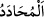
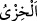

O münâfıklar “bilmediler mi ki kim Allah’a ve Elçisi’ne karşı koymağa kalkarsa”
Allah Teâlâ ve Rasûlü’ne aykırı davranır, haddi aşarsa
“”, birisi ile savaşmak ya da muhalefet etmek demektir. Nitekim Tâcü’l-
mesâdır’da böyle geçmektedir.
“onun için sürekli kalacağı cehennem ateşi vardır.” O ateş ona hak olmuştur. “İşte,
büyük rezillik budur.” Bu ebedî azabdır.
“”, rüsvaylık ve pişmanlığın da bulunduğu zillet, hor ve hakirlik demektir.
Bunlar, onların münâfıklıklarının semereleridir. Bunların ortaya çıkmasıyla ve
kendilerine özel azabın onlara ulaşmasıyla herkesin gözü önünde rezil olurlar
Âyetteki istifham (soru), âkıbetlerinin kötülüğünü bildikleri halde münâfıkların
büyüklük taslamaya kalkışmalarını kınamak mânâsı ifade etmektedir.
Bilesin ki her peygamber anlatılması imkansız eziyetlere maruz kalmıştır.
Peygamberler içerisinde eziyetlerin en şiddetlisine maruz kalanı ise Peygamber
Efendimiz (a.s.) olmuştur. Nitekim o şöyle demiştir: “Bana yapılan eziyet hiçbir
peygambere yapılmadı.”[188] Eziyet, insanın temizlenip arınmasına (tasfiye) sebep
olduğuna göre hadîsin mânâsı şu şekilde olur: “Hiçbir peygamber, benim arındırıldığım
kadar arındırılmamıştır.”
Peygamber Efendimiz (a.s.), Tâif’te elde edilen ganimetleri taksim ederken bazı
münâfıkların kendisinin âdil davranmadığını söylemeleri üzerine söylediği: “Allah ve
Rasûlü âdil olmazsa kim âdil olur. Allah, kardeşim Mûsâ’ya rahmet etsin o, bundan
daha fazla eziyetlere maruz kalmıştı da sabretmişti.”[189] şeklindeki hadislerine
gelince, muhtemelen bu, Hz. Peygamberin o vakte kadar çektiği eziyetlere nisbetledir.
Onun maruz kaldığı eziyet o vakitten sonra ömrünün sonuna kadar sayıca artmış,
keyfiyet yönünden de şiddetlenmiştir. Bu hususta kalbimize doğan budur.
Peygamberler (aleyhimü’s-selâm) eziyet görme, yurdundan sürülme, öldürülme gibi
sıkıntılara mâruz kaldıklarına göre evliyâ-yı kirâm hakkında ne düşünürsün! Onlar
temizlenip
arındırılmaya
peygamberlerden
daha
çok
muhtaçtırlar.
Çünkü
peygamberlerin kudsiyeti daha fazla, bâtınları daha nûrlu, sırları daha sâfîdir.
Şeyh Üftâde Hazretleri (k.s.) demiştir ki: Hz. Hasan (r.a.) zehirlenerek, Hz. Hüseyin
(r.a.) da boğazı kesilerek şehid edilmiştir. Çünkü onlar en yüksek ve en mükemmel
dereceye şehidlikle ulaşmışlardır. Hz. Peygamber (a.s.), Allah Teâlâ’dan şefaat
dileyerek onları bu duruma düşmekten kurtarabilirdi. Fakat onların şehid edilerek en
yüksek mertebeleri elde etmelerini, başlarına geleceklerden kurtulmalarından daha
münasip görmüştür. Hatta ezvâc-ı mutahharalarından birisine iki şişe vermiş ve: “Bu
şişelerden birisinin içindeki sarardığı zaman Hasan, zehirle şehid olur. Diğer şişenin
içindeki kırmızılaştığı zaman da Hüseyin, boynu kesilerek şehid olur.”[190]
buyurmuştur. Nitekim söylediği gibi de olmuştur.
Akıllı insana düşen, itaat etmek, teslimiyet göstermek ve her alçak münâfıktan gelecek
eziyetlere tahammül etmektir. Çünkü Allah Teâlâ, nerede olursa olsun takvâ sâhibi